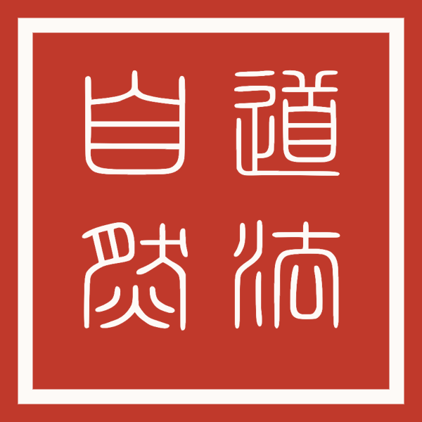

上善若水，水善利万物而不争。
——《道德经》第八章

今日运势
选择你的生肖，开启今日运势
请从上方下拉列表中选择你的生肖，
系统将为你生成专属的每日运势报告。
🌟 包含事业、感情、财运
🎨 幸运色 & 幸运数字
💡 每日智慧建议
道家智慧
道家典故与寓言
五行学说
相生相克关系
相生
木 → 火 → 土 → 金 → 水 → 木
相互滋生，促进生长相克
木 → 土 → 水 → 火 → 金 → 木
相互制约，平衡发展五行生克圆盘
点击任意一行，查看其生克关系与详细属性
点击上方圆盘或卡片中的任意一行
查看详细属性与生克关系
五行对应一览
| 五行 | 方位 | 季节 | 颜色 | 五脏 | 情志 | 五味 | 气候 | 数字 |
|---|
每日一签
静心摇签，随缘而安
心中默念所问之事，
点击下方按钮，摇一支属于你的智慧签。
每日一卦
静心摇卦，观象明理
《易》与天地准，故能弥纶天地之道。
心中默念所问之事，点击下方按钮，得一卦。
静心引导
静心计时
05:00
点击「开始」，进入静心时光，深呼吸，放下杂念。
60%
点击曲目播放，音乐循环播放，与静心计时器互不干扰。
道 磬
轻敲磬身，闻声静心
心 静 如 水
道家以磬通神、净心。轻敲一声，余音袅袅，杂念自消。
道家曰：「致虚极，守静笃。」静坐片刻，心神自明。
心斋坐忘
心斋坐忘，与道合一
庄子曰：「唯道集虚，虚者，心斋也。」
三层放下，回归本然。
🌊 外忘 · 放下外境
🫁 内忘 · 放下身体
🪷 坐忘 · 放下自我
四时养生
二十四节气养生
茶道养生
茶道六君子
茶道礼仪
茶道之礼，敬、清、和、寂。举手投足之间，皆见修养。
茶席布置
一方茶席，便是道场。器有定所，心有安处。
品茶九境
从解渴到悟道，茶中自有九重天地。
十二时辰养生
测测你的道号
探寻你的道门名号
五个问题，照见你的心性。
山、水、动、静之间，你的道号自会浮现。
🌄 山水之意
🧘 出世入世
🕊️ 心性气质
📜 专属道号
云游名山
洞天
福地
🖱️ 可缩放拖动
💡 道家认为名山胜地乃天地灵气所钟，修道之人常择此栖隐。点击地图上的标记或下方卡片可查看详情。
印章生成
篆书字体较大，首次使用需加载，请稍候几秒，加载后即可秒切。
200 px
点击「下载图片」保存为 PNG
💡 印章为道家风格，可自由搭配文字、排列、边框与颜色。
道家思想图谱
💡 图谱中的概念相互关联，点击节点可高亮其直接关系。道家思想以「道」为根，层层展开，彼此相生相成。
中药本草
每日一问
每日一问，积累中医智慧
每天一条中医常识，
点击卡片翻面查看答案，日积月累成知识库。